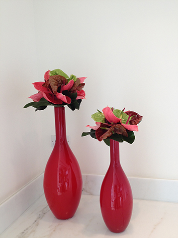

HOME
PALO ONDER. FLORAL DESIGNER, CONSULTANT AND ARTIST
Palo has been working with flower for more than 16 years. He is a highly skilled floral designer, consultant and artist. He also has many years of experience as a retail and contract florist.
Palo spends his time travelling within europe as well as working for top class hotels, restaurants, institutions and films. palo is renowned for his impeccable eye for detail and fresh ideas…
Palo Onder is proud to be accredited to many of London's most prestigious venues. His years of experience within these unique spaces ensure workable designs, understanding the practicalities whilst complimenting the individuality of each venue. He also works at many venues outside of London and internationally.
